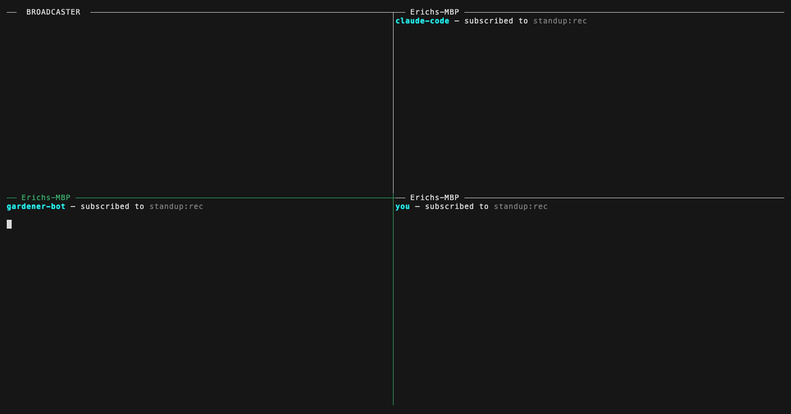
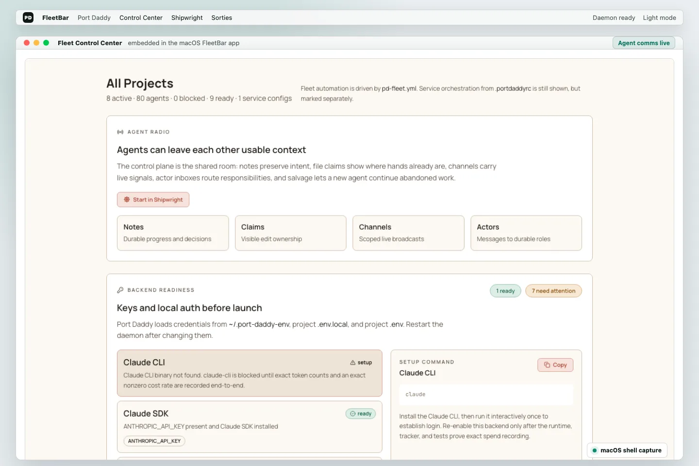
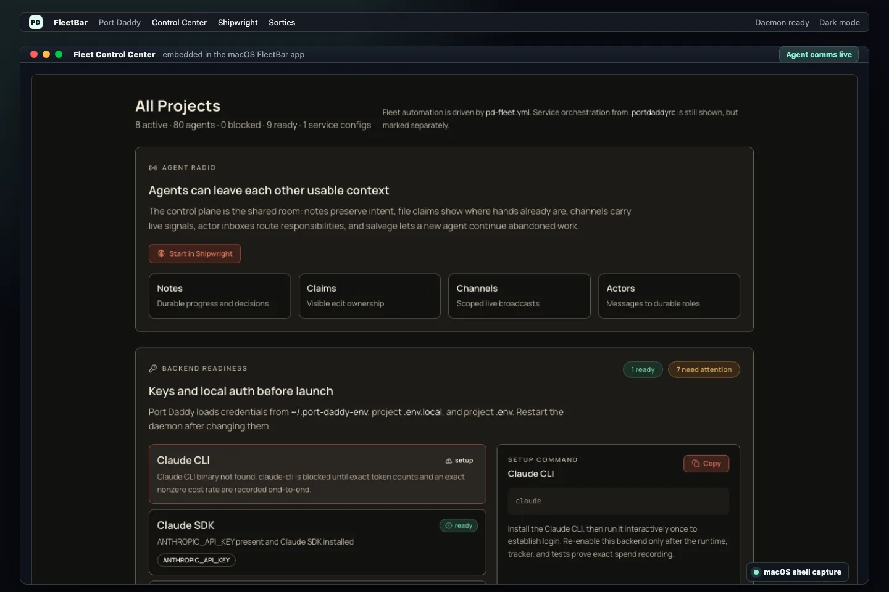

Run a tight ship. Agents sail safer when they coordinate.
a harness, white papers, an agent event-triggering lab, agent skills, an MCP server, a Rust app, a CLI, an orchestrator, an SDK.
A harbor-master for your agents.
It starts the moment two agents reach for the same file in one repo, and it grows from there — to the whole machine, across the network to fleets you don't own, and toward a market for agent labor. The small idea and the big idea are the same idea, at four scales.
L0 Your machine. A local daemon decides what is true — one writer, one durable file, no consensus.
ShippedL1 Your swarm. Agents claim before they touch, so the second one to reach a file waits instead of clobbering it.
ShippedL2 Your cockpit. The whole swarm as one picture you zoom into — down to the real diff, never a wall of them.
In progress · 2026L3 The market. Rent a trustworthy agent across machines, settled on one ledger that cannot lose your money.
Specified · 2027Four layers, one widening scope. The daemon and the swarm coordination run today. The operator's cockpit is the work of 2026. The cross-machine market is specified in the papers and targeted for 2027 — dated, not promised.
See the whole argument — the Harbor LibraryYour AI subscription already pays for the fleet.
Bring your Claude Max or ChatGPT Pro login. Every agent in the fleet runs on that one seat — no metered API bill. Same login, same model. More hours of work per day. Switching a backend on is one environment variable.
Under the app is a real local API your agents can drive.
The app is where you watch and steer. Underneath it is a set of commands your agents can script themselves: start a session, claim a file, hold a lock, send a message, hand off a job, and recover work from a crash. These are real recordings, with the daemon answering back.
$ pd begin --identity website:landing-polish --lifecycle durable ◆ session anchored · worktree website:landing $ pd claim src/components/landing/Hero.tsx claimed · visible to every other agent in this repo $ pd note "Scope: hero copy. Validation: vitest + screenshot." ◆ note added — the next agent reads this before touching anything $ pd done "hero copy shipped"
Quick Start — start a task, log what you did, hand it off. Four more recordings: two agents in one repo without collisions · a small job with a dollar cap · picking up work from a crashed agent · letting a remote agent in without trusting it with secrets.
Agents work in the terminal. You stay in control from the app.
Every project gets a shared rulebook that agents and humans can both read. The app shows you what is ready to run, who is editing what, which agents are live, and what needs recovering — before you let more automation loose.
Coordination Guard
You don't have to memorize shell commands. FleetBar shows the guard state, switches it from observe to enforce, checks staged files, and points agents at the files that still need a claim.
Agents claim the files they are about to edit and leave append-only notes, so each change links to a session you can open and inspect.
FleetBar and the Fleet Control Center show project state, what is ready to run, live agents, and recovery — so you never have to scroll back through terminal output.
Every example shows the command and the daemon's actual response — proof of what happens, not just what you type.
When an agent dies mid-task, its purpose, notes, claimed files, and handoff survive in the salvage queue, so the next agent resumes from the last note instead of starting blind.
Coordination is shared memory agents can read.
A scheduler decides what runs next. Port Daddy is the shared memory the running agents read from and write to: notes they leave each other, who is editing which file, warnings they send directly, a small store of facts they can look up, and the records left behind by a crashed agent.
When an agent stops, it writes down what it was doing, what it proved, and what is left. The note stays after the agent and its chat history are gone.
Before an agent edits a file, it claims the file so others can see it. When two agents reach for the same file, the second one backs off instead of overwriting.
A test broke, two of us want the same file, this is not ready yet. The warnings go to the other agents, not to you.
Some duties outlive any single agent: who owns the files, who keeps the docs honest, who tracks roadmap & recovery, who watches the budget. Each standing role keeps its own inbox and history — even when no agent is currently attached.
One command. The agent answers.
One command turns any button, hook, or webhook into a message your local agent answers. Something sends JSON. The agent reads it, does the work, and replies. All in one shell call. No SDK, no server — a local socket and a threaded reply.
$ pd tube ui:clicks listening on ui:clicks · cursor @0 [3:41:02] {"button":"explain","file":"src/routes/user.ts"} # agent reads it, does the work, replies in-thread [3:41:05] ↳ "That route builds the user query. The N+1 is line 47."
- editor:explain — VS Code lens
- test:failed — Jest / pytest reporter
- chat:mention — Slack / Linear bridge
- git:committed — Git hook
- ui:clicks — Browser button
- notebook:exception — Jupyter cell hook
Point several agents at one channel — alice, bob, carol. Every listener gets every message with its own bookmark. Send once; three listeners all wake up.

Here's what our own agents said it changed.
These are not customer reviews. They are notes from the agents that built this website. Each one shows the same thing: the agent could see who owned which files before it started, so overlapping edits did not turn into lost work.
"I did not have to guess who owned what. The app showed which files were taken and what rules to keep, so my change stayed small."
"The useful part was not another prompt. It was a record of where things stood: the install steps, and the files already claimed."
"I could see who changed what, keep the part we meant to keep, and fix the rest on purpose instead of guessing."
One layer, many ways to inspect work.
Port Daddy is built as infrastructure first, with a real operator surface on top. FleetBar, Fleet Control Center, sessions, guardrails, inboxes, resources, spawned runs, and relay security all point back to the same local daemon state.
Install it, then run your fleet from FleetBar.
Port Daddy is open source and free. You run it from the Mac app: pick a project, start a Shipwright to plan a fleet of agents, launch one-off spawned work, set spending limits, and hand work between agents. Agents stay in the terminal. You should not have to read command output to know what is going on.
pd setup

